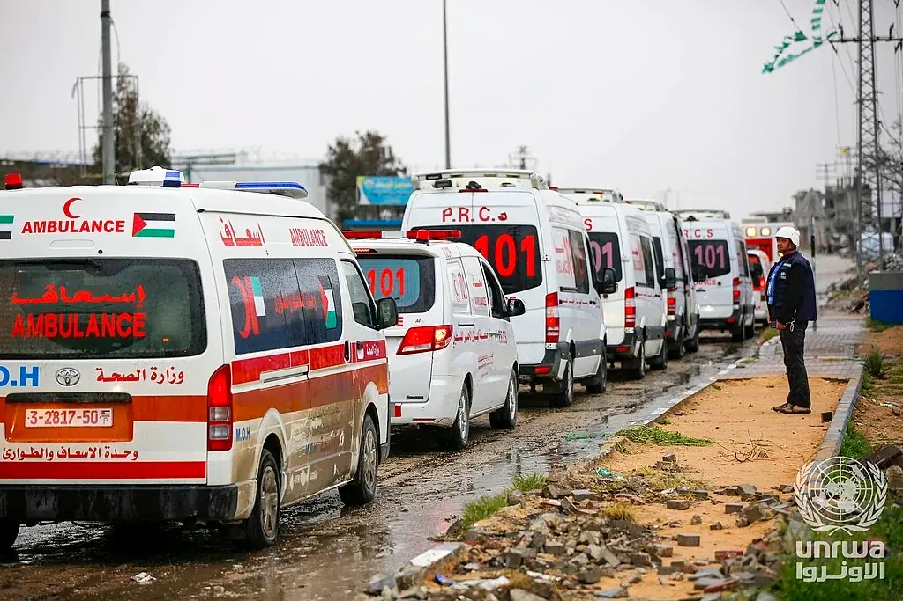

Eight vetted humanitarian organizations delivering food, medical aid, shelter, and long-term refugee support to Palestinians in Gaza and the West Bank. Every one is independently rated by Charity Navigator or GuideStar, and every one has active operations on the ground right now.

Palestinian Red Crescent ambulances wait for a medical evacuation at the Rafah crossing, March 7, 2025. Photo: Ashraf Amra / UNRWA · via Wikimedia Commons · CC BY-SA 3.0 IGO
UNRWA USA
Charity Navigator: 4 of 4 stars
RefugeesFoodShelter
The UN agency for Palestine refugees — schools, health clinics, and food distribution for 5.9 million registered refugees across Gaza, the West Bank, Jordan, Lebanon, and Syria. UNRWA has been the largest single humanitarian provider inside Gaza since the war began, and its staff have been killed in greater numbers than in any conflict in UN history. UNRWA USA sent $28M+ to UNRWA in 2025 alone.
The Palestine Children’s Relief Fund has worked in the region for more than 30 years. They’ve built pediatric cancer departments and ICUs, evacuate children for specialized surgery abroad, and run field hospitals and mobile clinics. Their orphan-sponsorship program supports thousands of children who lost parents since October 2023.
Founded 1968. No political or religious affiliation. Anera has distributed over 4 million meals, 19,850 hygiene kits, and 607,000+ medical kits in Gaza since October 2023. They operate mobile clinics in shelters, deliver hot meals from community kitchens, and maintain some of the longest-running aid pipelines in the region.
MAP provided healthcare to nearly one million Palestinians across Gaza in 2024 alone — the largest humanitarian response in the organization’s history. Emergency surgical teams, medical supplies to hospitals under siege, mental health support, and rehabilitation for the wounded. Active across Gaza, the West Bank, and in Lebanese refugee camps.
Chef José Andrés’s rapid-response organization has served more than 150 million meals in Gaza, at peak delivering one million hot meals daily from field kitchens. Seven WCK aid workers were killed by an IDF strike in April 2024. They resumed operations and continue to cook through the ongoing famine.
MSF / Médecins Sans Frontières has operated in Gaza and the West Bank since 1989. During the war they have donated 26+ tons of medical equipment, run field hospitals, and continue surgical and trauma care out of the few operational hospitals in Gaza. Nobel Peace Prize 1999.
One of the largest humanitarian responders in the Muslim world, with sustained distribution networks inside Gaza since the war began. Hot meals, flour and staples, medical kits, and cash assistance to displaced families. IRUSA works through local partners with deep community roots, which has kept them operating even as external access has been cut off.
Direct Relief ships medical supplies to frontline partners — in Gaza that means emergency grants and shipments to Anera, PCRF, and WHO-coordinated efforts. They move insulin, antibiotics, surgical supplies, and trauma kits at scale through established logistics networks. In 2022 alone they distributed $2B+ in aid across 97 countries.
Independent ratings. All eight organizations hold four-star Charity Navigator ratings, Platinum GuideStar seals, or equivalent UK Charity Commission standing. None are flagged for financial irregularities in the past three years.
Active on the ground. Every organization has verified current operations inside Gaza or the West Bank — not just historical presence. This list was last reviewed April 2026 against Charity Navigator and GuideStar.
No political endorsements implied. These organizations vary in their public positions on the conflict. They share only a track record of delivering humanitarian aid to civilians. Donors should read each charity’s own materials.
Unrestricted cash is most useful. Unless you have specific reason otherwise, avoid restricting your gift to a campaign — organizations know where the need is greatest week-to-week.
Beware of scams. Do not donate through social media fundraisers or GoFundMe unless you can verify the organizer directly. Charity Navigator and the BBB Wise Giving Alliance maintain scam-alert lists.
Every dollar given to a vetted humanitarian organization working in Gaza today will do more good than it would almost anywhere else on earth. Give what you can. Share the list.